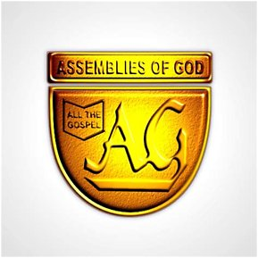

We strongly uphold the gospel while bringing up youths, childrens and responsuble adults for the future. we also have branches all around Nigeria with our headquaters at lagos state. The General Council of the Assemblies of God, Nigeria is a Pentecostal Christian denomination in Nigeria affiliated with the World Assemblies of God Fellowship, with headquarters in Opkoto, Ebonyi State. In November 2022, Abel Amadi was elected the General Superintendent of Assemblies of God, Nigeria. The Assemblies of God, Nigeria, is a fellowship of churches, with a strong emphasis on teamwork, accountability, and mutual support. Our church is led by team of dedicated ministers and leaders, who oversee various aspects of our organization. We have a General Superintendent, who is elected every four years to serve as the spiritual leader of our church. He is supported by a team of three other high-ranking ministers that are elected alongside the General Superintendent in the following offices – Assistant General Superintendent [AGS], General SECRETARY and the General Treasurer. These four highest-ranking ministers form a collegiate team of daily administration of the church; hence aptly referred to as [the] Board of Administrators [BoA]. Also, there are directors appointed to man the church’s various departments. Our structure is designed to facilitate effective communication, collaboration, and decision-making, ensuring that we remain focused on our mission and vision.
developed by Agbebaku Ephraim
© ASSEMBLIES OF GOD CHURH. ALL RIGHTS RESERVED 2026